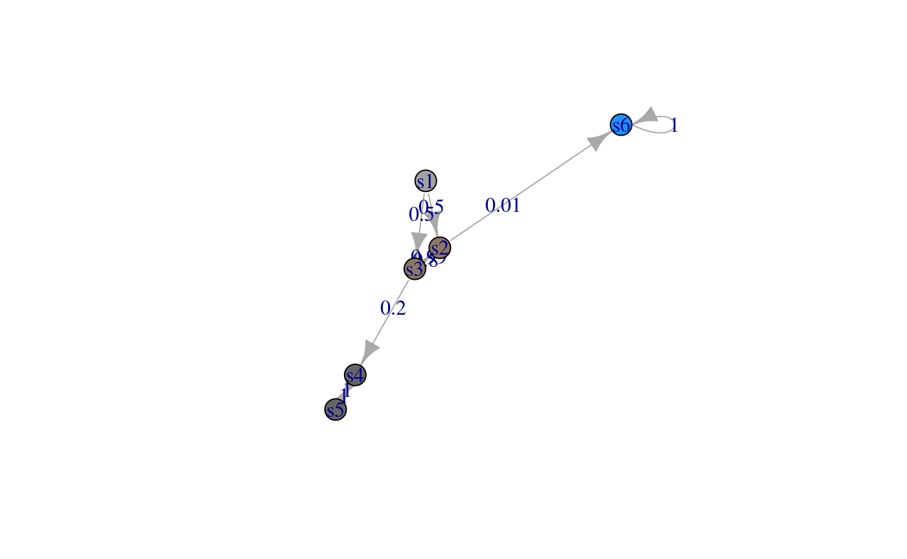

vignettes/complicate_steady_states_analysis.Rmd
complicate_steady_states_analysis.RmdLet us consider the Markov chain with the following transition matrix \[ M = \left(\begin{matrix} 0 & 1/2 & 1/2 & 0 & 0 & 0 \\ 0 & 0 & 1-p & 0 & 0 & p \\ 0 & 1-q & 0 & q & 0 & 0 \\ 0 & 0 & 0 & 0 & 1 & 0 \\ 0 & 0 & 0 & 1 & 0 & 0 \\ 0 & 0 & 0 & 0 & 0 & 1 \\ \end{matrix}\right) \] with \(1>p>0\) close to zero, e.g. \(p=1\%\) and \(1>q>0\), e.g. \(q=0.2\).
From the diagram or \(M\), it is easy that there are absorbing states (6) and recurrent states (4,5).
library(markovchain)
M<-matrix(c(0,0.5,0.50,0.0,0,0.00,0,0.0,0.99,0.0,0,0.01,0,0.8,0.00,
0.2,0,0.00,0,0.0,0.00,0.0,1,0.00,
0,0.0,0.00,1.0,0,0.00,0,0.0,0.00,0.0,0,1.00), nrow=6, byrow=TRUE)
colnames(M) <- rownames(M) <- paste0("s",1:6)
chain1 <- as(M,"markovchain")
plot(chain1)
We need to solve the following system in order to get the invariant measure \[ \mu M = \mu \Leftrightarrow \left\{\begin{array}{l} 0 = \mu_1 \\ 0.5\mu_1 + (1-q)\mu_3 = \mu_2 \\ 0.5\mu_1 + (1-p)\mu_2 = \mu_3 \\ q\mu_3+\mu_5= \mu_4 \\ \mu_4=\mu_5 \\ p\mu_2 + \mu_6=\mu_6 \end{array}\right. \Leftrightarrow \left\{\begin{array}{l} \mu_1 = 0 \\ (1-q)\mu_3 = \mu_2 \\ (1-p)\mu_2 = \mu_3 \\ q\mu_3+\mu_4= \mu_4 \\ \mu_5=\mu_4 \\ p\mu_2 =0 \end{array}\right. \Leftrightarrow \left\{\begin{array}{l} \mu_1 = 0 \\ \mu_2=0 \\ \mu_3=0 \\ \mu_5=\mu_4 \\ \end{array}\right. \] Using the probability condition \(\sum_i \mu_i=1\), we get \(2\mu_4+\mu_6=1\). So there exists an infinite number of invariant measures of the form (as long as \(p>0\)) \[ \mu = (0, 0, 0, \nu, \nu, 1-2\nu), \nu\in[0,1/2]. \] Note that there are independent of the value of \(p\) and \(q\). Indeed, we have
## s1 s2 s3 s4 s5 s6
## [1,] 0 0 0 0.25 0.25 0.5## s1 s2 s3 s4 s5 s6
## [1,] 0 0 0 0 0 1## s1 s2 s3 s4 s5 s6
## [1,] 0 0 0 0.5 0.5 0## Warning in steadyStates(chain1): Negative elements in steady states,
## working on closed classes submatrix## s1 s2 s3 s4 s5 s6
## [1,] 0 0 0 0.0 0.0 1
## [2,] 0 0 0 0.5 0.5 0Let \(T^{x\rightarrow x}\) is the number of periods to go back to state \(x\) knowing that the chain starts in \(x\).
On the example above, using the transition matrix, we have \[ \begin{array}{l} \forall k>0, P(T^{s1\rightarrow s1}=k) = 0 \Rightarrow P(T^{s1\rightarrow s1}=+\infty)=1, \\ P(T^{s4\rightarrow s4}=2) = 1 \Rightarrow P(T^{s4\rightarrow s4}=+\infty)=0,\\ P(T^{s5\rightarrow s5}=2) = 1 \Rightarrow P(T^{s5\rightarrow s5}=+\infty)=0,\\ P(T^{s6\rightarrow s6}=1) = 1 \Rightarrow P(T^{s6\rightarrow s6}=+\infty)=0. \end{array} \] So the states \(s4, s5, s6\) are recurrent (since \(E(T^{s4\rightarrow s4})=2=E(T^{s5\rightarrow s5})\) and \(E(T^{s6\rightarrow s6})=1\), they are positive recurrent), whereas the state \(s1\) is transient. Furthermore, for the last two states, we have \[ \begin{array}{l} P(T^{s2\rightarrow s2}=2k) = 0.8^k(1-p)^k, p>0 \Rightarrow P(T^{s2\rightarrow s2}=+\infty)=0, \\ P(T^{s3\rightarrow s3}=2k) = (1-p)^k0.8^k, p>0 \Rightarrow P(T^{s3\rightarrow s3}=+\infty)=0. \\ \end{array} \] So the states \(s2, s3\) are recurrent (since \(E(T^{s2\rightarrow s2})=E(T^{s3\rightarrow s3})=1/(1-0.8(1-p))<+\infty\), they are positive recurrent).
Let us compute the characteristic polynom of the matrix \(M\) \[\begin{eqnarray*} \chi_M(x) &=& \left|\begin{matrix} -x & 1/2 & 1/2 & 0 & 0 & 0 \\ 0 & -x & 1-p & 0 & 0 & p \\ 0 & 1-q & -x & q & 0 & 0 \\ 0 & 0 & 0 & -x & 1 & 0 \\ 0 & 0 & 0 & 1 & -x & 0 \\ 0 & 0 & 0 & 0 & 0 & 1-x \\ \end{matrix}\right| = \left|\begin{matrix} -x & 1/2 & 1/2 & 0 & 0 \\ 0 & -x & 1-p & 0 & 0 \\ 0 & 1-q & -x & q & 0 \\ 0 & 0 & 0 & -x & 1 \\ 0 & 0 & 0 & 1 & -x \\ \end{matrix}\right| (1-x) \\ &=& -(1-x) \left|\begin{matrix} -x & 1/2 & 1/2 & 0 \\ 0 & -x & 1-p & 0 \\ 0 & 1-q & -x & 0 \\ 0 & 0 & 0 & 1 \\ \end{matrix}\right| -x(1-x) \left|\begin{matrix} -x & 1/2 & 1/2 & 0 \\ 0 & -x & 1-p & 0 \\ 0 & 1-q & -x & q \\ 0 & 0 & 0 & -x \\ \end{matrix}\right| \\ &=& -(1-x) \left|\begin{matrix} -x & 1/2 & 1/2 \\ 0 & -x & 1-p \\ 0 & 1-q & -x \\ \end{matrix}\right| +x^2(1-x) \left|\begin{matrix} -x & 1/2 & 1/2 \\ 0 & -x & 1-p \\ 0 & 1-q & -x \\ \end{matrix}\right| \\ &=& +x(1-x) \left|\begin{matrix} -x & 1-p \\ 1-q & -x \\ \end{matrix}\right| -x^3(1-x) \left|\begin{matrix} -x & 1-p \\ 1-q & -x \\ \end{matrix}\right| \\ &=& [x(1-x) -x^3(1-x) ](x^2-(1-p)(1-q)) = x(1-x)^2(1+x)(x-(1-p)(1-q))(x+(1-p)(1-q)) \end{eqnarray*}\] Therefore the eigenvalues are \(\pm 1, 0, \pm(1-p)(1-q)\) with 1 of multiplicity 2. Hence the power of \(M\) is \[ M^n = P \left|\begin{matrix} 1^n & 0 & 0 & 0 & 0 & 0 \\ 0 & 1^n & 0 & 0 & 0 & 0 \\ 0 & 0 & (-1)^n & 0 & 0 & 0 \\ 0 & 0 & 0 & 0 & 0 & 0 \\ 0 & 0 & 0 & 0 & (1-p)^n(1-q)^n & 0 \\ 0 & 0 & 0 & 0 & 0 & (1-p)^n(1-q)^n \\ \end{matrix}\right| P^{-1} \] with an appropriate matrix \(P\) changing base in \(\mathbb R^6\).
The classification of states is given by dedicated functions
## [[1]]
## [1] "s1"
##
## [[2]]
## [1] "s2" "s3"
##
## [[3]]
## [1] "s4" "s5"
##
## [[4]]
## [1] "s6"## [[1]]
## [1] "s4" "s5"
##
## [[2]]
## [1] "s6"## [1] "s6"## [1] "s1" "s2" "s3"Let us compute power of \(M\). Note that even powers of \(M\) yield to a matrix different than odd powers since \(P(T^{s4\rightarrow s4}=2)=P(T^{s5\rightarrow s5}=2)=1\).
## Loading required package: Matrix##
## Attaching package: 'expm'## The following object is masked from 'package:Matrix':
##
## expm## s1 s2 s3 s4 s5 s6
## s1 0 1.163927e-51 1.440359e-51 0.4807692 0.4759615 0.04326923
## s2 0 2.304575e-51 0.000000e+00 0.9519231 0.0000000 0.04807692
## s3 0 0.000000e+00 2.304575e-51 0.0000000 0.9615385 0.03846154
## s4 0 0.000000e+00 0.000000e+00 1.0000000 0.0000000 0.00000000
## s5 0 0.000000e+00 0.000000e+00 0.0000000 1.0000000 0.00000000
## s6 0 0.000000e+00 0.000000e+00 0.0000000 0.0000000 1.00000000## s1 s2 s3 s4 s5 s6
## s1 0 1.152287e-51 1.152287e-51 0.4759615 0.4807692 0.04326923
## s2 0 0.000000e+00 2.281529e-51 0.0000000 0.9519231 0.04807692
## s3 0 1.843660e-51 0.000000e+00 0.9615385 0.0000000 0.03846154
## s4 0 0.000000e+00 0.000000e+00 0.0000000 1.0000000 0.00000000
## s5 0 0.000000e+00 0.000000e+00 1.0000000 0.0000000 0.00000000
## s6 0 0.000000e+00 0.000000e+00 0.0000000 0.0000000 1.00000000Invariant measures are the eigenvectors associated to the eigen value 1 for the transposed matrix \(M^T\) such that \(\mu_i\geq 0\). If in addition \(\sum_i \mu_i=1\), then it is a probability measure.
Let us compute the eigenvalue. We don’t retrieve the theoretical values \(\pm 1, 0, \pm(1-p)(1-q)\).
## [1] 1.000 -1.000 0.000 0.792 -0.792## eigen() decomposition
## $values
## [1] 1.0000000 1.0000000 -1.0000000 0.8899438 -0.8899438 0.0000000
##
## $vectors
## [,1] [,2] [,3] [,4] [,5]
## [1,] 0.000000e+00 0 0.000000e+00 0.00000000 0.000000000
## [2,] 1.161938e-15 0 5.551115e-17 0.48246436 -0.482927050
## [3,] 1.442406e-15 0 -1.665335e-16 0.53670772 0.537222429
## [4,] 7.063412e-01 0 -7.071068e-01 -0.45926896 0.459709403
## [5,] 7.063412e-01 0 7.071068e-01 -0.51606512 -0.516560027
## [6,] -4.652096e-02 1 -2.168404e-19 -0.04383801 0.002555246
## [,6]
## [1,] 7.758348e-01
## [2,] -3.918357e-01
## [3,] -4.848967e-01
## [4,] 2.153374e-17
## [5,] 9.697934e-02
## [6,] 3.918357e-03Keeping those equalling 1, we obtain
## [,1] [,2]
## [1,] 0.000000e+00 0
## [2,] 1.161938e-15 0
## [3,] 1.442406e-15 0
## [4,] 7.063412e-01 0
## [5,] 7.063412e-01 0
## [6,] -4.652096e-02 1So numerically, only one (probability) measure is obtained \((0,0,0,0,0,1)\). That’s rather logical.
One can get the “boundary” measures by looking to the subset of recurrent states, extracting positive eigenvectors associated to the eigenvalue 1 and normalize ti. Indeed
Msub <- M[rownames(M) %in% unlist(recurrentClasses(chain1)), colnames(M) %in% unlist(recurrentClasses(chain1))]
eigen(Msub)$vectors[,eigen(Msub)$values >= 1]## [,1] [,2]
## [1,] 0 0.7071068
## [2,] 0 0.7071068
## [3,] 1 0.0000000t(eigen(Msub)$vectors[,eigen(Msub)$values >= 1]) / colSums(eigen(Msub)$vectors[,eigen(Msub)$values >= 1])## [,1] [,2] [,3]
## [1,] 0.0 0.0 1
## [2,] 0.5 0.5 0The steadyStates function in (Spedicato 2017) implements the abovementioned algorithm when negative values are found in the eigenvectors of the full matrix corresponding to unitary eigenvalues.
Spedicato, Giorgio Alfredo. 2017. “Discrete Time Markov Chains with R.” The R Journal. https://journal.r-project.org/archive/2017/RJ-2017-036/index.html.